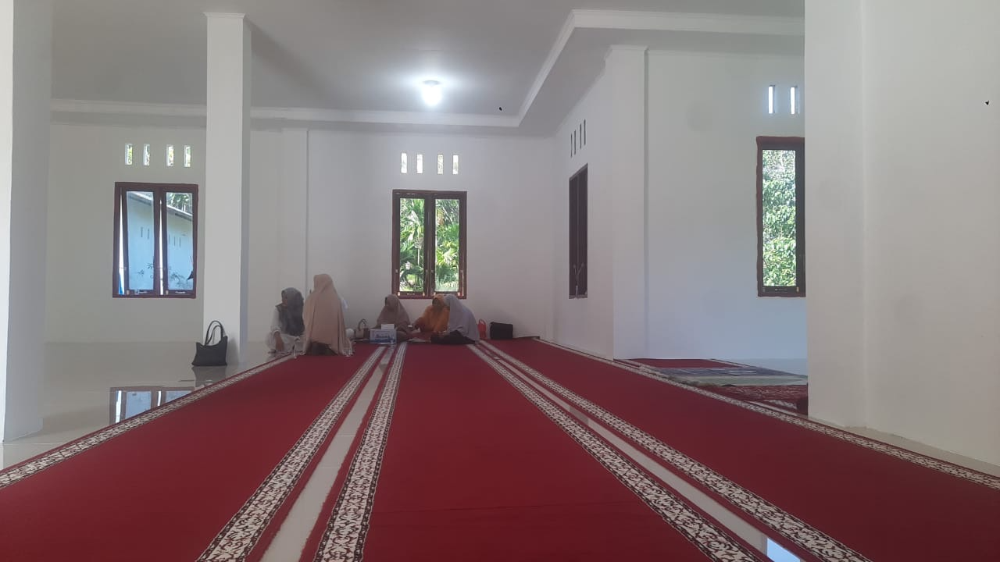
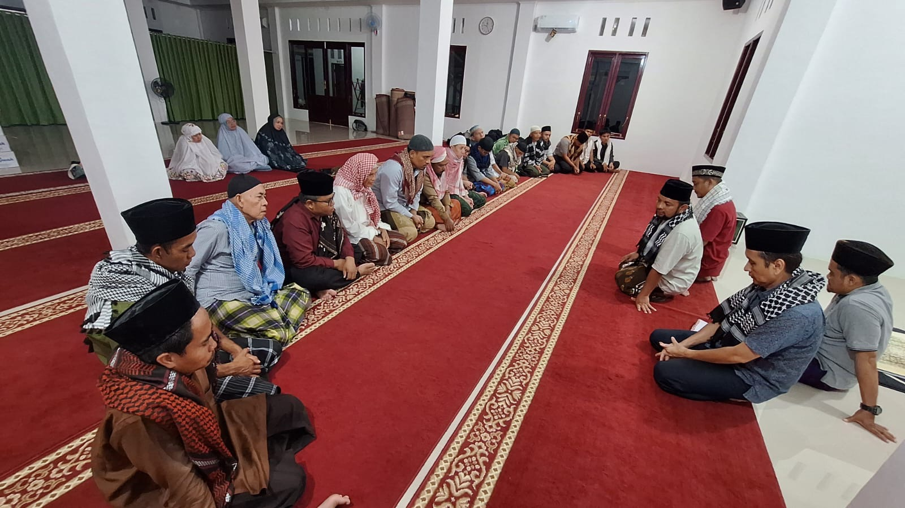
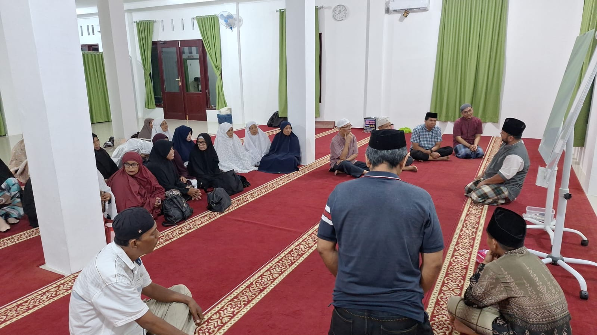
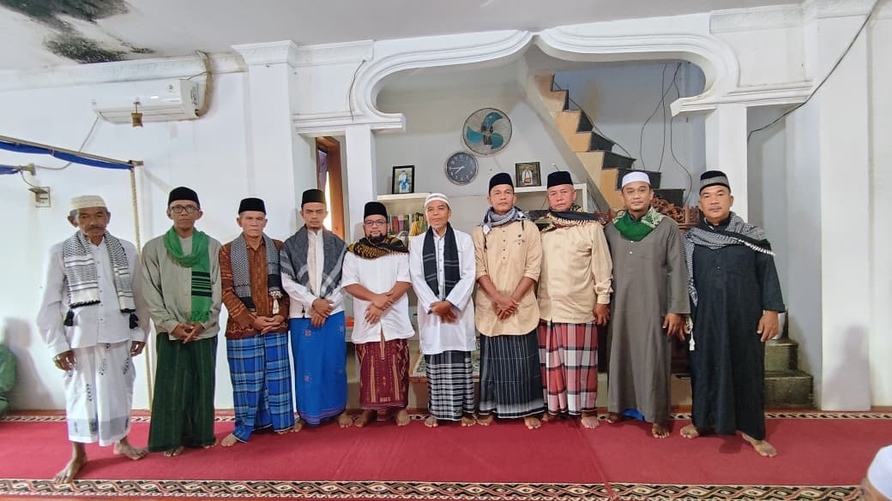
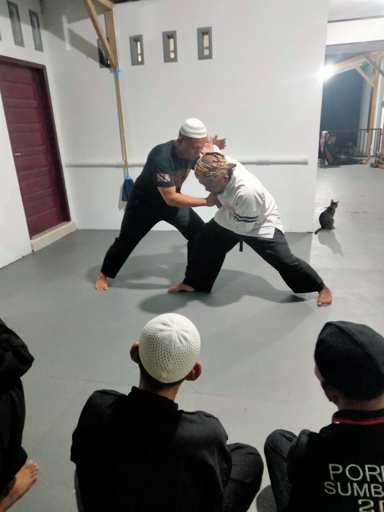
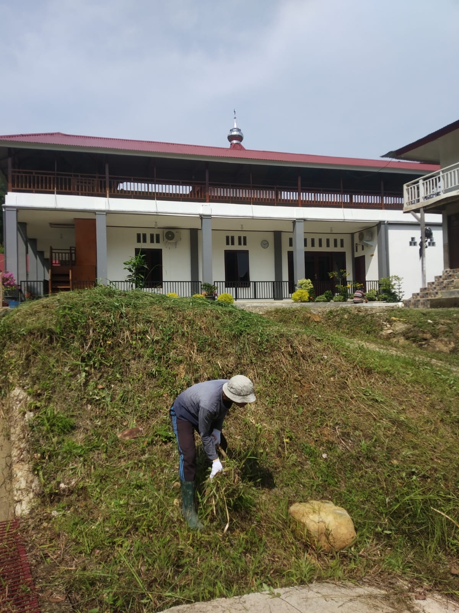
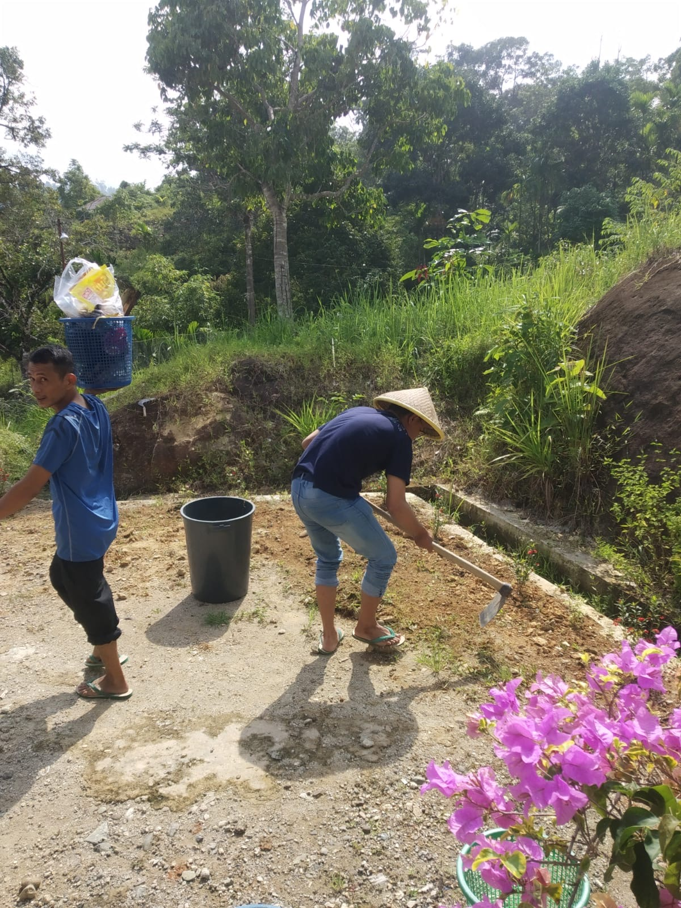
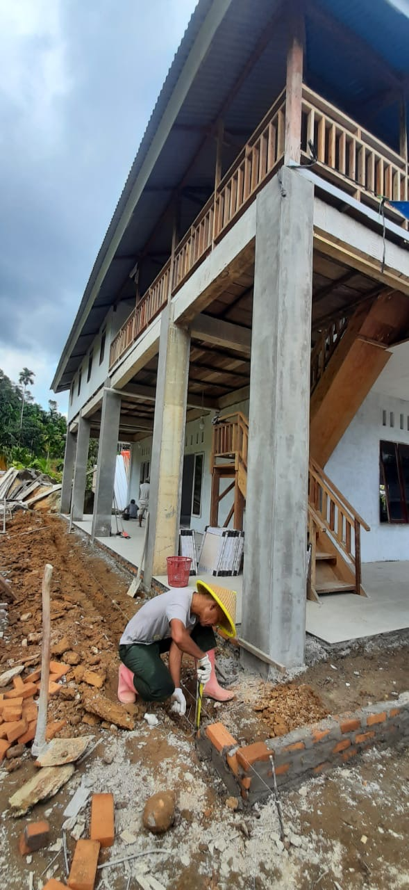

Karakter: dokumenter, diambil pengurus dengan ponsel — cahaya apa adanya (neon malam, matahari siang keras), tanpa penataan, tanpa filter. Jangan dipoles, dijadikan hitam-putih, atau diberi grain. Karpet merah ruang salat sudah dekat dengan maroon emblem: jangan menumpuk elemen maroon di atasnya.